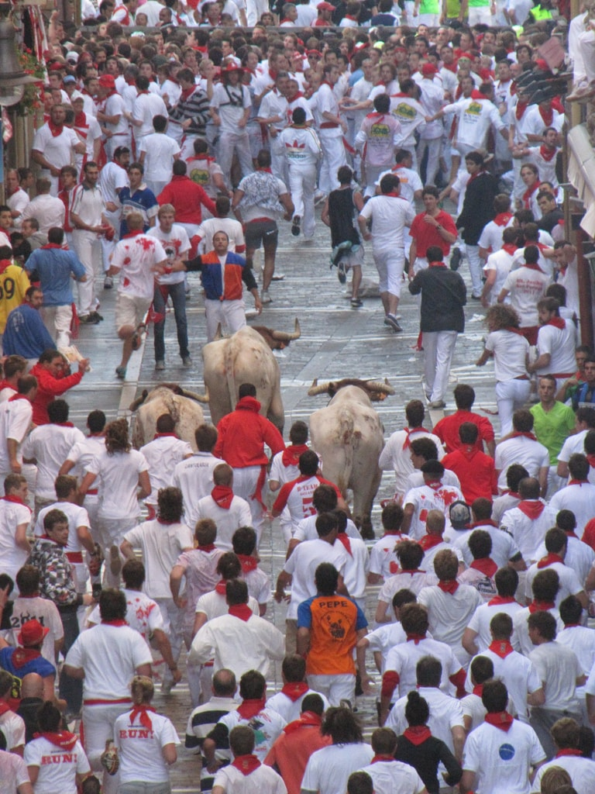

By Johnny, Matthew, William, and Connor
This PBL was meant to gather information about a certain country each grouped received to learn more about both the language of spanish and the many cultures that use it. In the beginning, each group was assigned the same puzzle that they needed to solve, afterwards, they were sent on a small scavenger hunt to find their assigned country. The scavenger hunt involved a piece of paper with directions, in spanish, to a certain location in school. In order to get there, translation was required, without the use of any dictionaries.
La capital de España con una población de 3.2 millones de personas. La ciudad sirve como centro político, económico y cultural de España. La capital contiene una gran cantidad de monumentos, iglesias, museos y otras atracciones turísticas que hacen de ella la cuarta ciudad más visitada de Europa con 7 millones de personas visitan anualmente.
Barcelona es la segunda ciudad más poblada de España, con 1,6 millones de personas. Barcelona es una de las más recorridas las ubicaciones en el mundo debido a su rica cultura, su hermosa arquitectura, influyente y art.
Valencia es una ciudad dentro de España que tiene raíces en la historia antigua. Fue fundada como una colonia romana en principios 138 A.C. y fue situado cerca de las orillas del Turia. Patrimonio antiguo de la ciudad y monumentos hacen un destino turístico popular.
Parque Nacional del Teide es uno de los parques nacionales más temprano fundados y más visitados en España. El parque se centra en el pico más alto de España, un volcán hirviendo y una de las maravillas naturales más grandes de Europa.
Situada entre Madrid y Valencia se encuentra la ciudad de Cuenca. Es una ciudad que se asemeja a las ciudades medievales que se construyeron sobre las laderas de la montaña. Los edificios colgantes construidos por el acantilado hacen un estilo único de arquitectura y una de las zonas más giras por España.
La ruta del vino es una carretera a las ciudades productoras de vino en España . Hay 24 rutas del vino común en toda España. El vino se bebe tradicionalmente con toda la comida española .
Pequeñas porciones de comida que se sirve con vino , idea españoles de " tapear " ir de bar en bar muestreo de una amplia variedad de tapas con los amigos. Comedor experiencia Seville- ¢ 40 por persona , 2 1/2 horas , disponible de Marzo de 17 de - 31 de Diciembre.
Hay muy pocas ciudades en las que no se puede encontrar espacios " reinventados ", donde uno puede experimentar gastronmy local.
Alimentos populares son los mariscos , salchichas sazonadas , quesos , pan, aceite y vinagre. El pescado esinportante en la dieta de España prominetly bacalao, anguila y calamar. Casi todas las carnes son arrojados juntos en sopas como el gazpacho (sopa fría de tomate ) .
La tradición de la siesta. Es un descanso por la tarde donde los trabajadores y los estudiantes detienen por unas horas comer, dormir y relajarse. La traducción de la siesta de las es la siesta. Esta siesta es generalmente a partir de dos a cinco de la tarde. Algunos pueden que resulte extraño, pero la razón de este pan es para que todos los lugareños descansar después de la mañana para una agitada tarde. Dos de la tarde es también el pico para el calor, esto permite a las personas a poner en la comodidad de sus hogares hasta que pase el calor.
Tradición de botellon (fiestas en la calle) en las ciudades sureñas de Sevilla y Granada donde las autoridades locales hacen la vista gorda a beber en las calles. Aunque se practica en otras zonas del país así, las autoridades allí tienden a ser menos indulgente. Esta tradición es una actividad de español donde se encuentran personas en las zonas comunes para socializar mientras que el consumo de alcohol.
Julio 6th-14th.
Es el monumento mejor conservado construido por los romanos en España
Una gran iglesia católica en Barcelona, España más visitado atractivo turístico
Se dice que es la mejor ciudad de Europa.
Ubicó en Madrid
"Spain Weather, Climate and Geography." Spain Weather, Climate and Geography. World Travel Guide, 6 Mar. 2016. Web. 07 Mar. 2016.
"Spain." Food in Spain. Web. 07 Mar. 2016.
"10 Top Tourist Attractions in Spain." Touropia Travel Experts. Web. 07 Mar. 2016.
Thyberg, David. "Reasons to Travel to Spain." Reasons to Travel to Spain. Web. 07 Mar. 2016.
"La Siesta in Spain - Spanish Siesta Tradition | Don Quijote." DonQuijote. Web. 07 Mar. 2016.
"15 Top-Rated Tourist Attractions in Spain | PlanetWare." 15 Top-Rated Tourist Attractions in Spain | PlanetWare. Web. 08 Mar. 2016.
"Tourism in Madrid, Spain | Spain.info in English." Spain.info. Web. 08 Mar. 2016.
"Tourism in Region of Valencia in Spain | Visit Region of Valencia | Spain.info in English." Spain.info. Web. 08 Mar. 2016.